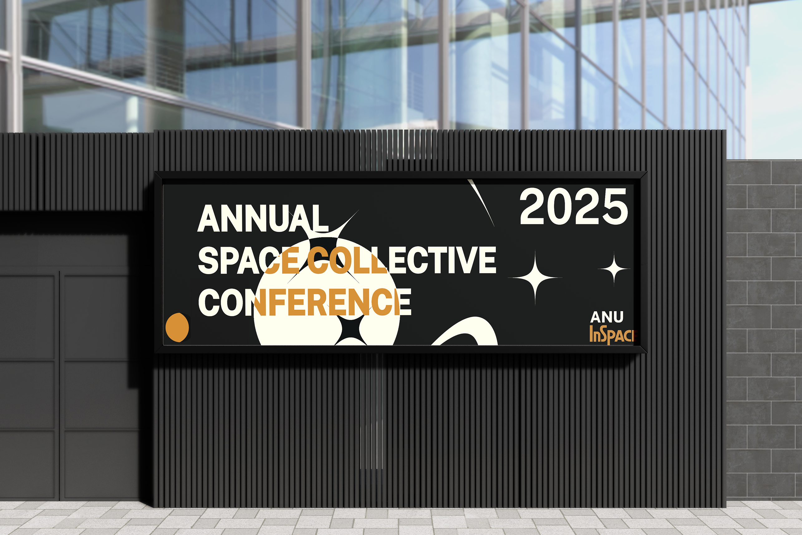

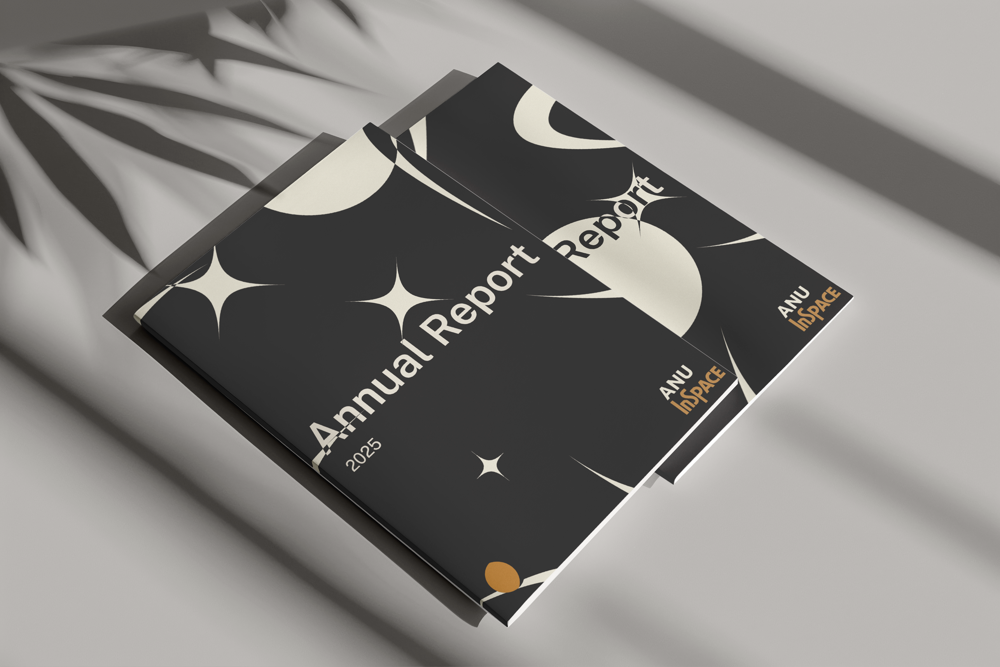
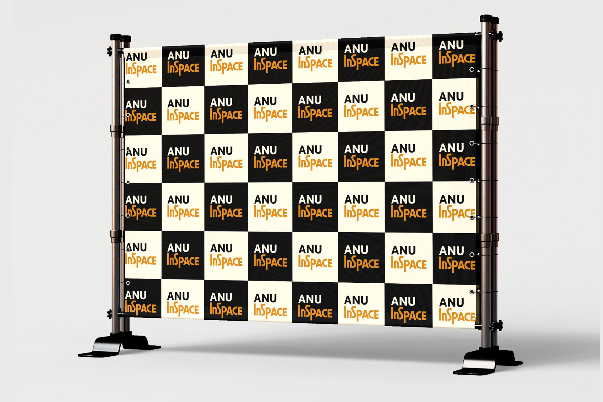
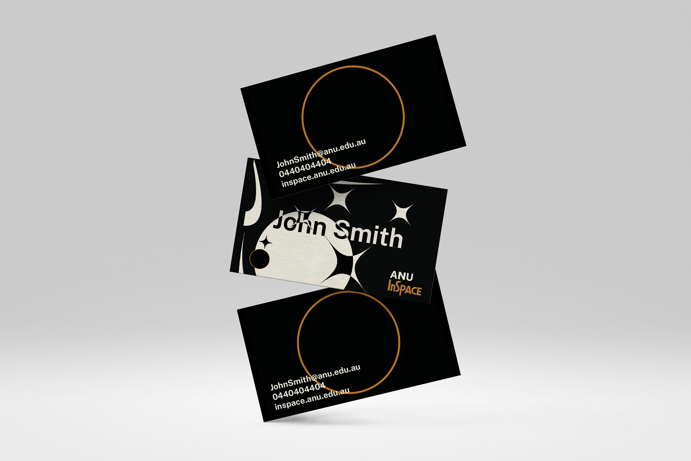
Extra Collateral using generator
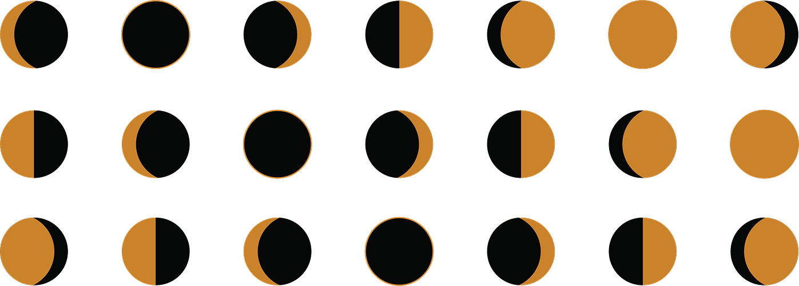
This assignment was completed for a creative coding class. We were assigned to re-design an existing brand identity using code as our tool to make the new design dynamic. My Design focused on the ANU Institute of Space, rebranding the institute to closer fit with space iconography while under the ANU style guidelines. Each motif was designed by myself then used in a collateral generator to produce multiple artefacts.
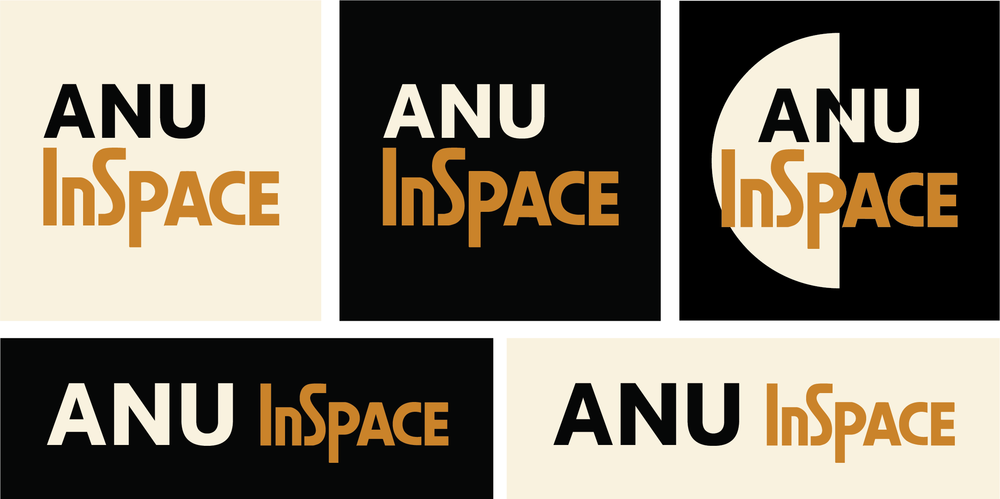
Logo Suite
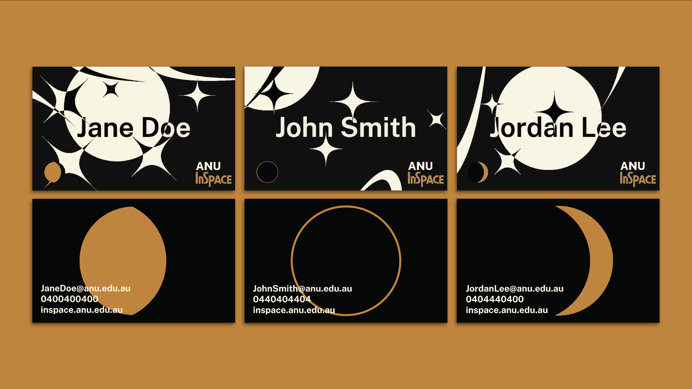
Business Cards using Collateral Generator
An excerpt from my finished assignment description:
"A distinctive dynamic design element within the system is the moon phase, reimagined as a symbol/motif that adds both temporal and thematic depth to each branded piece. Through the integration of a real-time moon cycle API, the system reflects the current lunar phase at the moment a design is generated (whether it's a business card, event banner, or annual report)."
Rather than influencing the colour palette, the moon functions as a subtle visual timestamp or signature. It marks the moment someone joins the organisation, the timing of an event, or the lunar phase during the release of a publication such as an annual report. This introduces a poetic link between brand identity and the cosmos.
Each piece created under the Inspace brand becomes part of a broader celestial cycle. By embedding lunar data into the identity system, the result is more than just a visual motif, it becomes a cosmic timestamp, anchoring every communication in time and space.
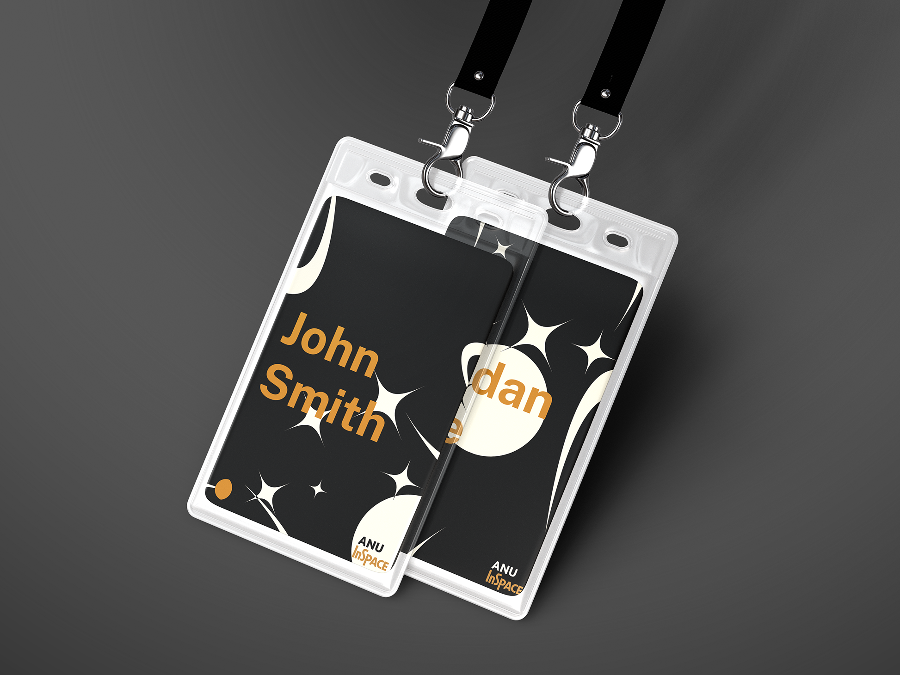
Company Lanyards
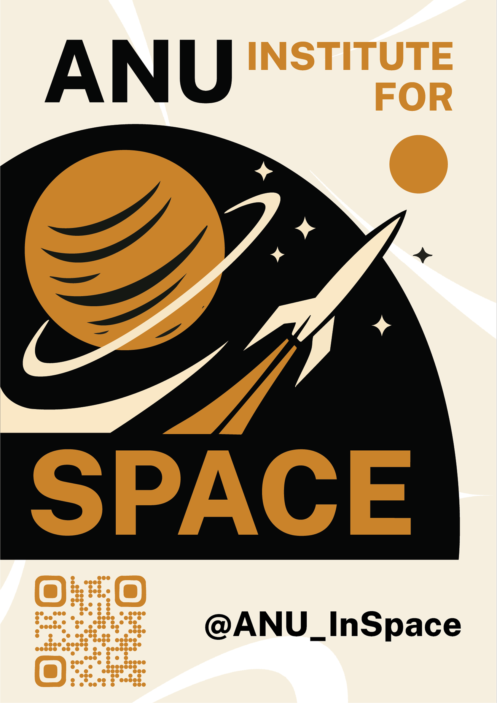
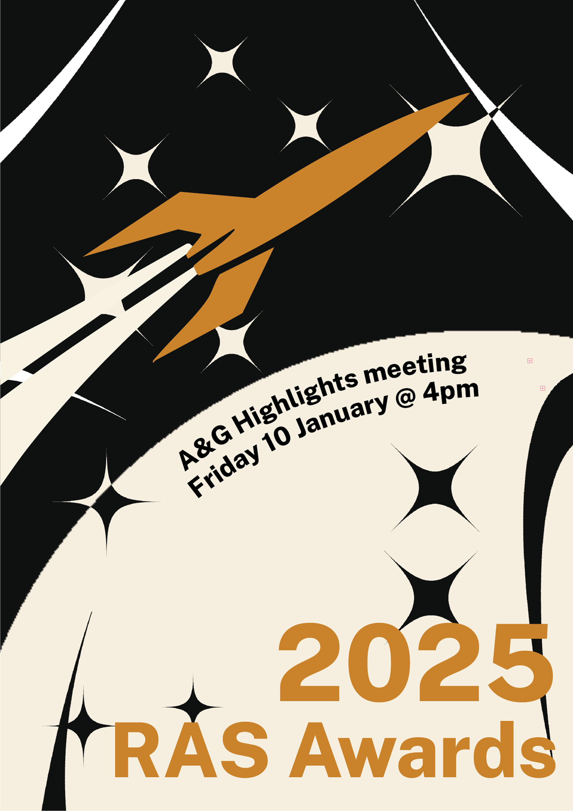
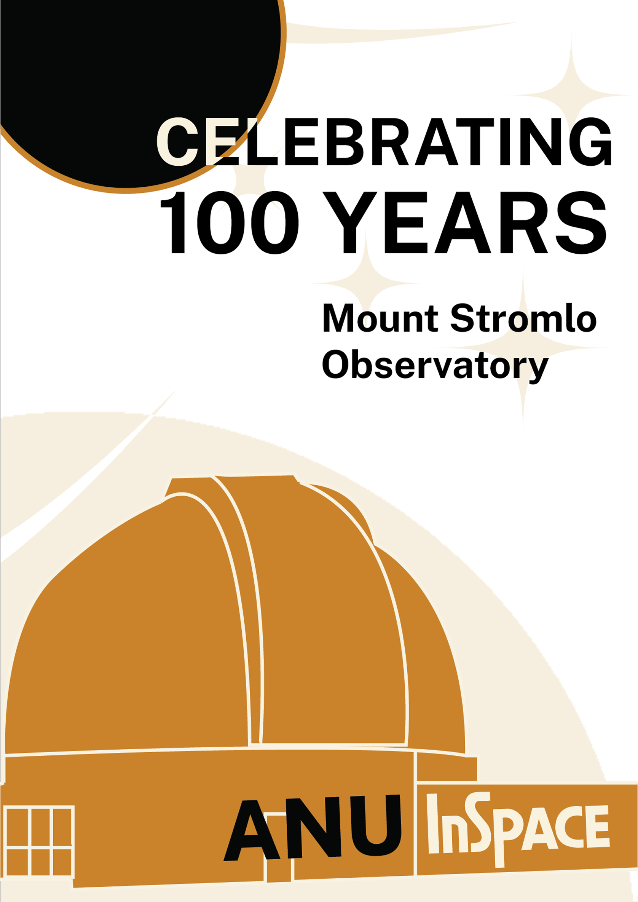
Advertisement Poster using the Collateral Generator




Extra Collateral using generator